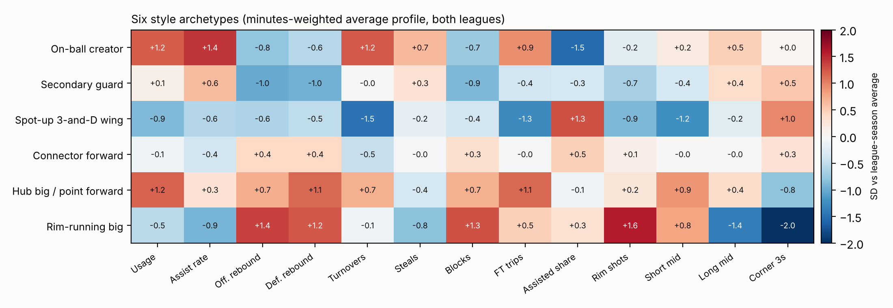

Player archetypes
Six style archetypes are fitted jointly on both leagues, with each feature measured relative to its own league and season. Sub-types split each archetype further (e.g. Alpha scorer, Floor general and Shot-making scorer inside On-ball creator).

How the mix has shifted
Share of all minutes played by each archetype, by season.
How trustworthy are the labels?
| check | estimate | 95% range | how_to_read |
|---|---|---|---|
| Base archetype stability (bootstrap ARI, 10 resamples) | 0.95 | 0.92 to 0.98 | 1 = identical clusters on resampled data; >0.9 is very stable |
| Sub-type stability (bootstrap ARI, range over 6 archetypes) | 0.88 | 0.79 to 0.95 | lo/hi = weakest and strongest archetype split |
| NBA: same archetype next season (same team, 1000+ min both years) | 0.8 | 0.78 to 0.81 | roles persist but can evolve; ~0.6-0.8 is healthy |
| WNBA: same archetype next season (same team, 1000+ min both years) | 0.75 | 0.67 to 0.82 | roles persist but can evolve; ~0.6-0.8 is healthy |
| NBA: pooled model vs NBA-only model (ARI, 500+ min) | 0.97 | 1 = the joint model sorts players exactly as a league-only model | |
| WNBA: pooled model vs WNBA-only model (ARI, 500+ min) | 0.55 | 1 = the joint model sorts players exactly as a league-only model | |
| Drift: early-seasons model applied to later seasons vs full model (ARI, 500+ min) | 0.86 | early = NBA <=2013-14, WNBA <=2017; high = archetype definitions stable over time | |
| Hand labels v1 - archetype agreement, all (TUNING set) | 0.52 | 0.40 to 0.64 | chance ~0.17; kappa 0.41; top-2 0.59 |
| Hand labels v1 - archetype agreement, NBA (TUNING set) | 0.59 | 0.44 to 0.75 | chance ~0.17; kappa 0.50; top-2 0.62 |
| Hand labels v1 - archetype agreement, WNBA (TUNING set) | 0.44 | 0.27 to 0.61 | chance ~0.17; kappa 0.31; top-2 0.56 |
| Hand labels v1 - archetype agreement, defined players (TUNING set) | 0.54 | 0.38 to 0.71 | chance ~0.17; kappa 0.42; top-2 0.66 |
| Hand labels v1 - archetype agreement, blended players (TUNING set) | 0.45 | 0.25 to 0.66 | chance ~0.17; kappa 0.31; top-2 0.45 |
| Hand labels v2 - archetype agreement, all (UNTOUCHED check) | 0.4 | 0.28 to 0.53 | chance ~0.17; kappa 0.29; top-2 0.51 |
| Hand labels v2 - archetype agreement, NBA (UNTOUCHED check) | 0.55 | 0.37 to 0.73 | chance ~0.17; kappa 0.46; top-2 0.62 |
| Hand labels v2 - archetype agreement, WNBA (UNTOUCHED check) | 0.25 | 0.09 to 0.41 | chance ~0.17; kappa 0.11; top-2 0.39 |
| Hand labels v2 - archetype agreement, defined players (UNTOUCHED check) | 0.45 | 0.28 to 0.63 | chance ~0.17; kappa 0.34; top-2 0.55 |
| Hand labels v2 - archetype agreement, blended players (UNTOUCHED check) | 0.26 | 0.07 to 0.46 | chance ~0.17; kappa 0.09; top-2 0.42 |
| NBA: archetype changes, same team, half 1 vs 2 | 0.17 | 0.16 to 0.18 | trades should change roles more often than the same-team baseline |
| NBA: archetype changes, after trade | 0.28 | 0.24 to 0.32 | trades should change roles more often than the same-team baseline |
| WNBA: archetype changes, same team, half 1 vs 2 | 0.25 | 0.22 to 0.27 | trades should change roles more often than the same-team baseline |
| WNBA: archetype changes, after trade | 0.45 | 0.16 to 0.75 | trades should change roles more often than the same-team baseline |
| NBA: odds ratio of archetype change, trade vs same team (adjusted for segment minutes) | 1.86 | 1.53 to 2.25 | >1 means trades change roles beyond sampling noise |
| NBA hustle check: Perimeter stopper forward - deflections (z vs league) | 0.42 | independent NBA.com data (2017-18+); >0 supports a defensive label | |
| NBA hustle check: Defensive / connector guard - deflections (z vs league) | 0.45 | independent NBA.com data (2017-18+); >0 supports a defensive label | |
| NBA hustle check: Low-usage rim protector - contested 2s (z vs league) | 1.8 | independent NBA.com data (2017-18+); >0 supports a defensive label | |
| NBA hustle check: Catch-and-shoot wing - deflections (z vs league) | -0.74 | independent NBA.com data (2017-18+); >0 supports a defensive label |